import pandas as pd
import numpy as np
import matplotlib.pyplot as plt
import seaborn as sns
%matplotlib inline
# Set the overall style (whitegrid is good for plots with grids)
sns.set_style("darkgrid")
# Set a pinkish color palette
sns.set_palette("pastel") # or use a custom one below
# Define a custom pinkish color palette
# pink_palette = ["#FFC0CB", "#FF69B4", "#FFB6C1", "#DB7093", "#FF1493"]
blue_palette = ["#a2cffe", "#70b7f0", "#4693e0", "#1c6fdc", "#0047ab"]
sns.set_palette(blue_palette)Basics of Exploratory Data Analysis
machine learning
python
kaggle
Loading the data
- This data is from the Playground series in Kaggle (Season 5, Episode 5)
- Calorie Prediction Competition
- We let the
idcolumn in csv files to be the indexes in the dataframe, else it would have become an additional and unnecessary feature to handle
train_df = pd.read_csv('playground-series-s5e5/train.csv', index_col='id')
test_df = pd.read_csv('playground-series-s5e5/test.csv', index_col='id')
original_df = pd.read_csv('playground-series-s5e5/calories.csv', index_col="User_ID")Understanding the data
- Below we check if any
MissingorNaNvalues present in either ‘train’, ‘test’, ‘original’ data
# train_df.isna().sum().eq(0).all()
print((train_df.isna().sum() == 0).all())
print((test_df.isna().sum() == 0).all())True
True- Getting information on all features in the data, particularly we can find which columns are numerical and which are not
- We identify that by looking at the
Dtypefor each columnObject: Categorical / text or stringfloat/int: is numerical, discrete or continuous
- This data looks fairly straight forward, as mostly the features seem numerical
- Only
Sexfeature is categorical, but that is also easy to handle as it has only 2 unique values
- We identify that by looking at the
train_df.info()<class 'pandas.core.frame.DataFrame'>
Index: 750000 entries, 0 to 749999
Data columns (total 8 columns):
# Column Non-Null Count Dtype
--- ------ -------------- -----
0 Sex 750000 non-null object
1 Age 750000 non-null int64
2 Height 750000 non-null float64
3 Weight 750000 non-null float64
4 Duration 750000 non-null float64
5 Heart_Rate 750000 non-null float64
6 Body_Temp 750000 non-null float64
7 Calories 750000 non-null float64
dtypes: float64(6), int64(1), object(1)
memory usage: 51.5+ MB- The stats of all numerical columns in train & test data look similar
- If you try comparing any statistic for a column in both train & test, they are very close
- So we can think of these data coming in from same distribution
print(train_df.describe().T)
print('--- ' * 20)
print(test_df.describe().T) count mean std min 25% 50% 75% max
Age 750000.0 41.420404 15.175049 20.0 28.0 40.0 52.0 79.0
Height 750000.0 174.697685 12.824496 126.0 164.0 174.0 185.0 222.0
Weight 750000.0 75.145668 13.982704 36.0 63.0 74.0 87.0 132.0
Duration 750000.0 15.421015 8.354095 1.0 8.0 15.0 23.0 30.0
Heart_Rate 750000.0 95.483995 9.449845 67.0 88.0 95.0 103.0 128.0
Body_Temp 750000.0 40.036253 0.779875 37.1 39.6 40.3 40.7 41.5
Calories 750000.0 88.282781 62.395349 1.0 34.0 77.0 136.0 314.0
--- --- --- --- --- --- --- --- --- --- --- --- --- --- --- --- --- --- --- ---
count mean std min 25% 50% 75% max
Age 250000.0 41.452464 15.177769 20.0 28.0 40.0 52.0 79.0
Height 250000.0 174.725624 12.822039 127.0 164.0 174.0 185.0 219.0
Weight 250000.0 75.147712 13.979513 39.0 63.0 74.0 87.0 126.0
Duration 250000.0 15.415428 8.349133 1.0 8.0 15.0 23.0 30.0
Heart_Rate 250000.0 95.479084 9.450161 67.0 88.0 95.0 103.0 128.0
Body_Temp 250000.0 40.036093 0.778448 37.1 39.6 40.3 40.6 41.5- Get column names seperated into numerical & categorical categories
numerical_columns = [col for col in train_df.columns if train_df[col].dtype != 'object']
categorical_columns = [col for col in train_df.columns if train_df[col].dtype == 'object']
# numerical_columns = []
# categorical_columns = []
# for col in train_df.columns:
# if train_df[col].dtype != 'object':
# numerical_columns.append(col)
# else:
# categorical_columns.append(col)numerical_columns['Age', 'Height', 'Weight', 'Duration', 'Heart_Rate', 'Body_Temp', 'Calories']categorical_columns['Sex']Univariate analysis: Plotting the data
- Plot the categorical features, observations from below plots:
- Well balanced male / female classes in the train data
- When plotting box-plt of sex vs calories; min/max, all quartiles are located similarly for both male and female classes. Although there are a few more outliers calories in male class as compared to female class.
for col in categorical_columns:
plt.figure(figsize=(12,6))
plt.subplot(1,2,1)
sns.boxplot(x=train_df[col], y=train_df['Calories'])
plt.subplot(1,2,2)
counts = train_df[col].value_counts()
plt.pie(counts, labels=counts.index, autopct='%1.1f%%')
train_df[numerical_columns].skew()Age 0.436397
Height 0.051777
Weight 0.211194
Duration 0.026259
Heart_Rate -0.005668
Body_Temp -1.022361
Calories 0.539196
dtype: float64
- Plotting and observe the numerical features:
Age: heavily skewed to right- frequency decrease with increase in age
- may suggest that mostly younger people using the workout monitoring app
Height:- minimal skew
- symmetrical, bell shaped, approximately Gaussian (Normal) distribution
Weight:- slightly right skewed, which represent real-world data, upper limits can vary for wegihts
Duration:- approximately Uniform distribution
Heart_rate:- Normally distributed with slight righ skew
- small portion of people with elevated heart rates
Body_temp:- Negatively skewed
- after workout, slightly elevated from normal temperatures makes sense
Calories:- Right skewed, most people burn fewer calories per session, small fraction burn significantly more
for col in numerical_columns:
plt.figure(figsize=(18,6))
plt.subplot(1,3,1)
sns.histplot(data=train_df[col], bins=30, kde=True)
plt.subplot(1,3,2)
sns.violinplot(x=train_df[col])
plt.subplot(1,3,3)
sns.boxplot(data=train_df[col], orient='h')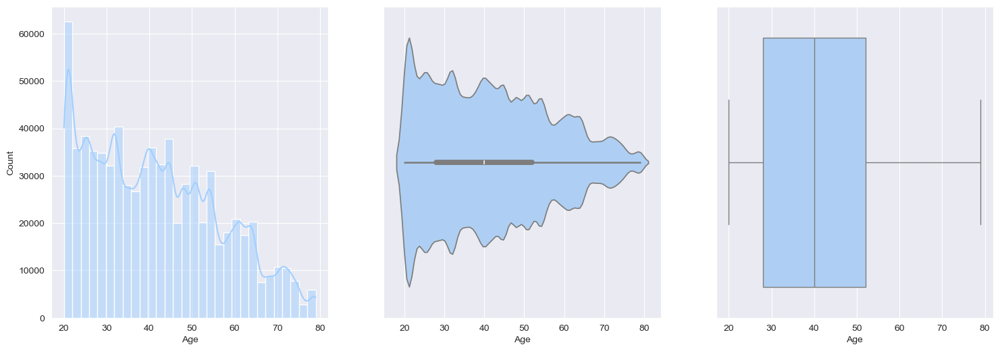
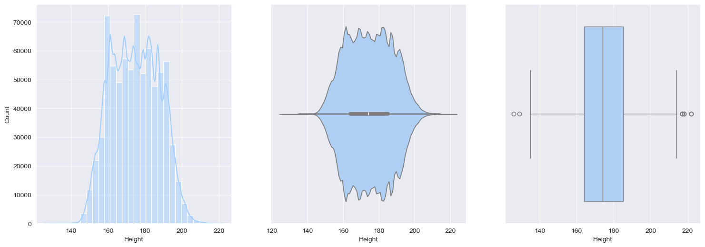
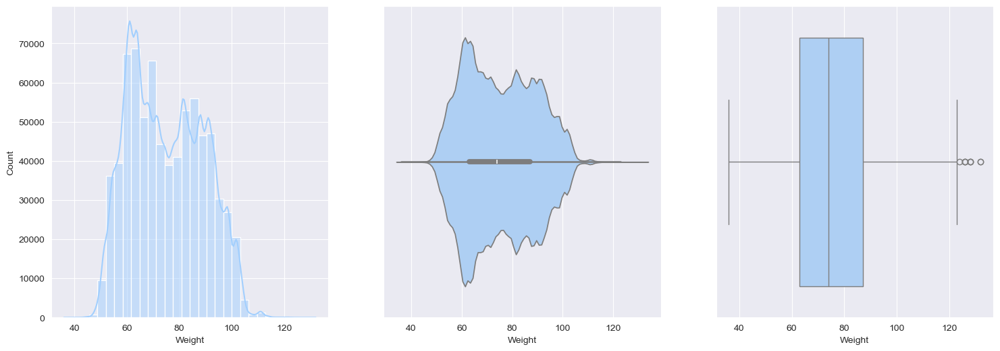
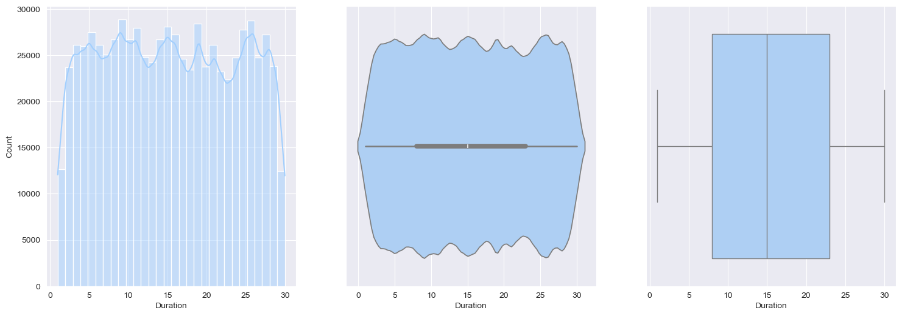
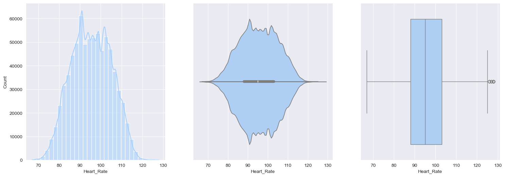
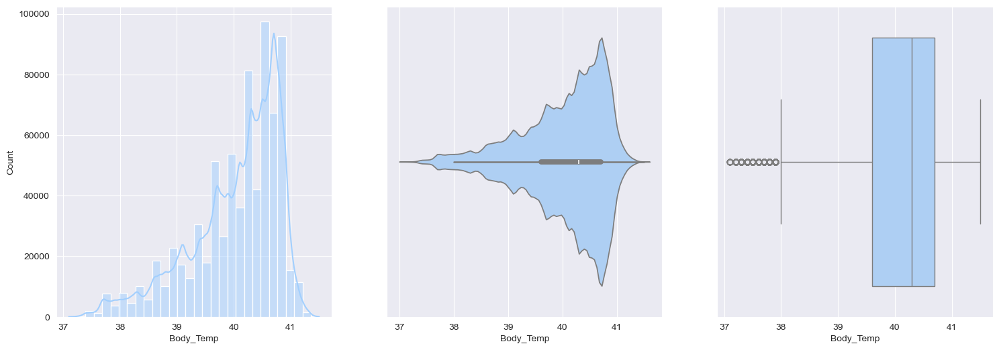
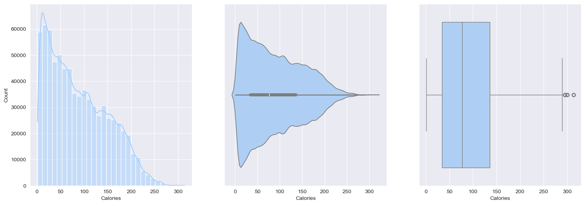
# There are "14,919" outliers in Body_temp feature, where temperature is less than 30
train_df[train_df['Body_Temp']<38].shape[0]14919Bivariate analysis
- Let’s find the Correlations between the numerical features
# train_df[numerical_columns].corr().style.background_gradient()
corr = train_df[numerical_columns].corr()
corr| Age | Height | Weight | Duration | Heart_Rate | Body_Temp | Calories | |
|---|---|---|---|---|---|---|---|
| Age | 1.000000 | 0.011975 | 0.073690 | 0.015656 | 0.017037 | 0.030275 | 0.145683 |
| Height | 0.011975 | 1.000000 | 0.957967 | -0.029936 | -0.013234 | -0.034641 | -0.004026 |
| Weight | 0.073690 | 0.957967 | 1.000000 | -0.020845 | -0.002384 | -0.023717 | 0.015863 |
| Duration | 0.015656 | -0.029936 | -0.020845 | 1.000000 | 0.875327 | 0.903066 | 0.959908 |
| Heart_Rate | 0.017037 | -0.013234 | -0.002384 | 0.875327 | 1.000000 | 0.795972 | 0.908748 |
| Body_Temp | 0.030275 | -0.034641 | -0.023717 | 0.903066 | 0.795972 | 1.000000 | 0.828671 |
| Calories | 0.145683 | -0.004026 | 0.015863 | 0.959908 | 0.908748 | 0.828671 | 1.000000 |
# Plot the correlation matrix with colors
# Generate a mask for the upper triangle
mask = np.triu(np.ones_like(corr, dtype=bool))
# Set up the matplotlib figure
plt.figure(figsize=(5, 10))
# Generate a custom diverging colormap
cmap = sns.diverging_palette(230, 20, as_cmap=True)
# Draw the heatmap with the mask and correct aspect ratio
sns.heatmap(corr, mask=mask, cmap=cmap, vmax=.3, center=0,
square=True, linewidths=.5, cbar_kws={"shrink": .5})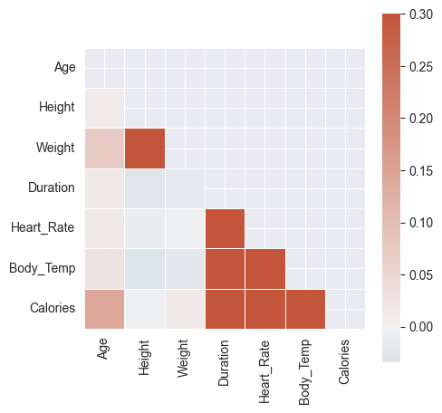
- Quite clear from above color gradients:
Caloriesis highly correlated withDuration,Heart_Rate,Body_TempHeart_RateandBody_Tempare highly correlatedDurationandHeart_Rateare highly correlatedDurationandBody_Tempare highly correlated
- Scatter plots amongst the numerical features
- Hardly any patterns emerge when we compare
CaloriestoAge,Weight,Height - Whereas, strong patterns can be seen with
Duration,Heart_Rate,Body_Temp
- Hardly any patterns emerge when we compare
So it’s fair to say that scatter plots confirm the correlation numbers
for col in numerical_columns[:-1]:
plt.figure(figsize=(10,5))
sns.scatterplot(x=train_df[col], y=train_df['Calories'], alpha=0.5)
plt.title(f'{col} vs Calories')
plt.xlabel(col)
plt.ylabel('Calories')
plt.show()

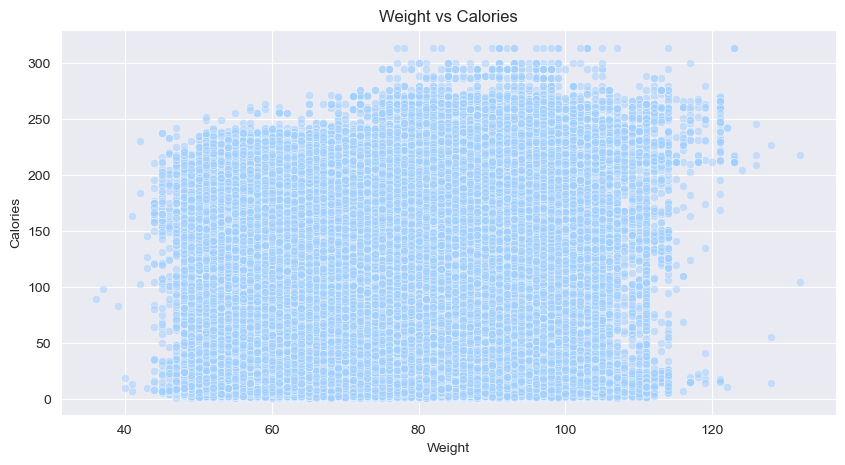
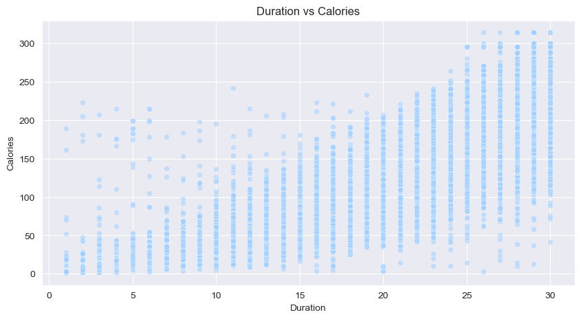
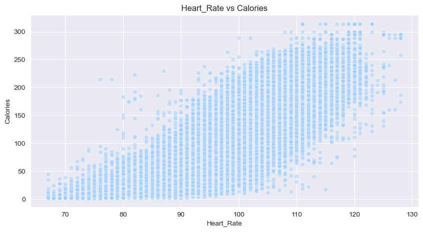
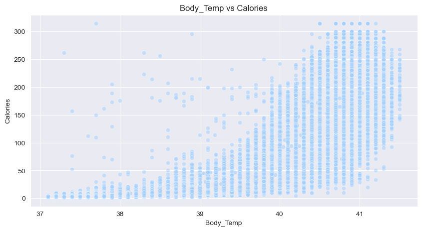
Data preprocessing
train_df['Sex'] = train_df['Sex'].map({'male':0, 'female':1})
test_df['Sex'] = test_df['Sex'].map({'male':0, 'female':1})X = train_df.drop('Calories', axis=1)
y = np.log1p(train_df['Calories'])
X_test = test_dfplt.figure(figsize=(18,5))
plt.subplot(1,2,1)
sns.boxplot(y, orient='h')
plt.subplot(1,2,2)
sns.boxplot(np.log1p(y), orient='h')
plt.xlabel(f'Log of Calories')Text(0.5, 0, 'Log of Calories')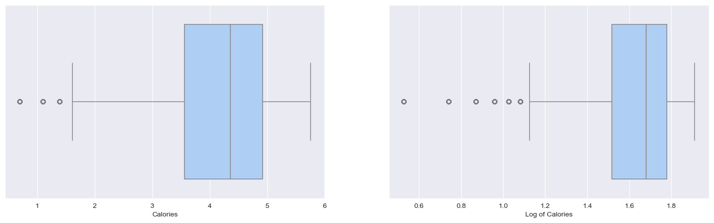
original_df['Gender'] = original_df['Gender'].map({'male':0, 'female':1})
original_df = original_df.rename(columns={'Gender': 'Sex'})X_original = original_df.drop('Calories', axis=1)
y_original = np.log1p(original_df['Calories'])from sklearn.feature_selection import mutual_info_regressionmi = mutual_info_regression(X=X, y=y, n_neighbors=5)
mi
# this way we can get the Mutual Information scores of every feature in X against y (target)array([0.016463 , 0.09825665, 0.05492303, 0.05537672, 1.64154125,
0.97683727, 1.12166262])X.columnsIndex(['Sex', 'Age', 'Height', 'Weight', 'Duration', 'Heart_Rate',
'Body_Temp'],
dtype='object')mutual_info = pd.Series(mi)
mutual_info.index = X.columns
mutual_infoSex 0.016463
Age 0.098257
Height 0.054923
Weight 0.055377
Duration 1.641541
Heart_Rate 0.976837
Body_Temp 1.121663
dtype: float64mutual_info = pd.DataFrame(mutual_info.sort_values(ascending=False), columns=['Mutual Information'])mutual_info.style.bar(subset='Mutual Information')#, cmap='RdYlGn')| Mutual Information | |
|---|---|
| Duration | 1.641541 |
| Body_Temp | 1.121663 |
| Heart_Rate | 0.976837 |
| Age | 0.098257 |
| Weight | 0.055377 |
| Height | 0.054923 |
| Sex | 0.016463 |
mi_original = mutual_info_regression(X=X_original, y=y_original, n_neighbors=5)
mutual_info_original = pd.Series(mi_original)
mutual_info_original.index = X_original.columns
mutual_info_original = pd.DataFrame(mutual_info_original.sort_values(ascending=False), columns=['Mutual Information'])
mutual_info_original.style.bar(subset='Mutual Information')#, cmap='RdYlGn')| Mutual Information | |
|---|---|
| Duration | 1.510654 |
| Body_Temp | 0.987192 |
| Heart_Rate | 0.875529 |
| Age | 0.030383 |
| Weight | 0.019115 |
| Sex | 0.008419 |
| Height | 0.003110 |